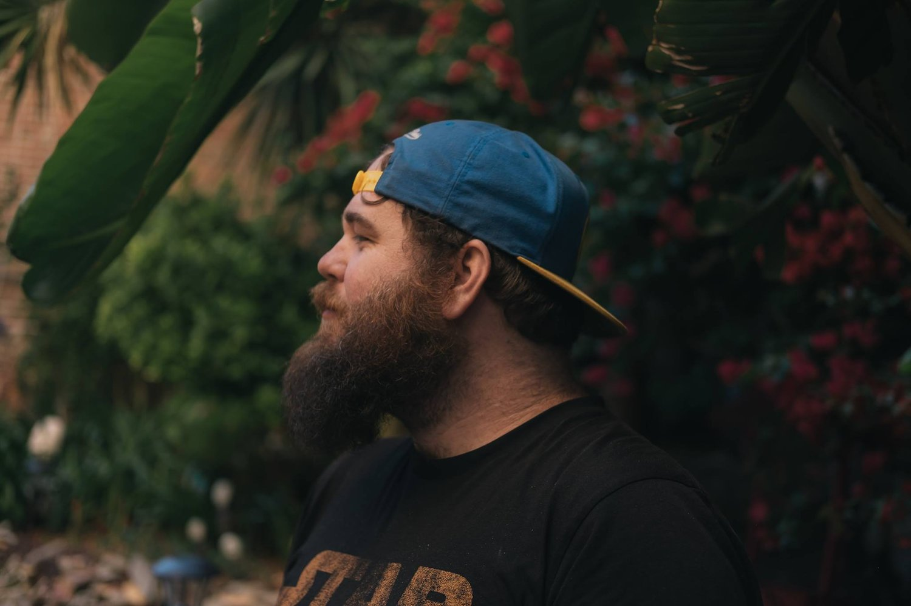
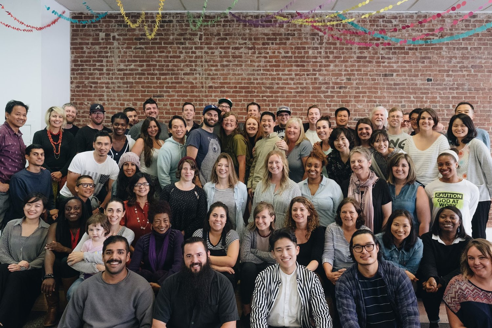
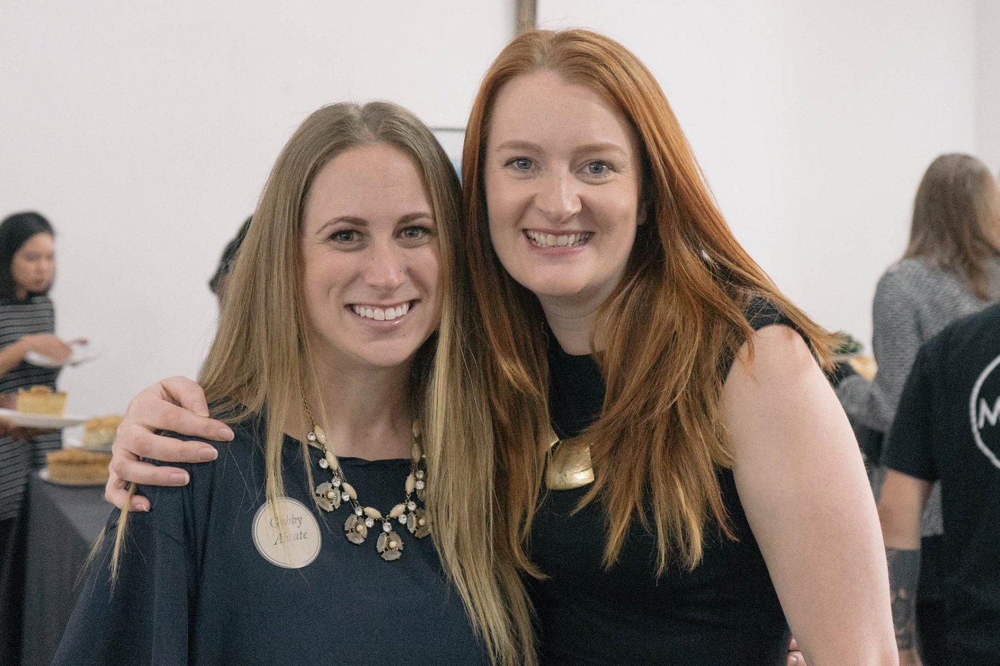
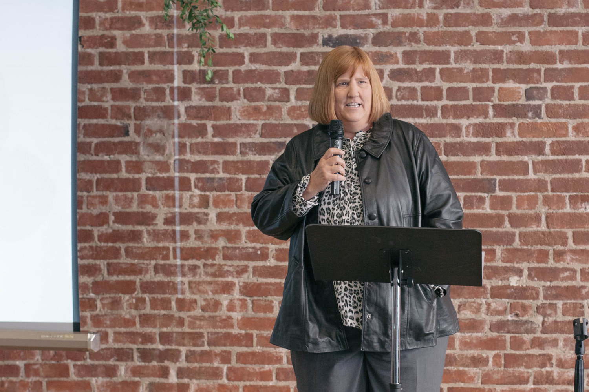
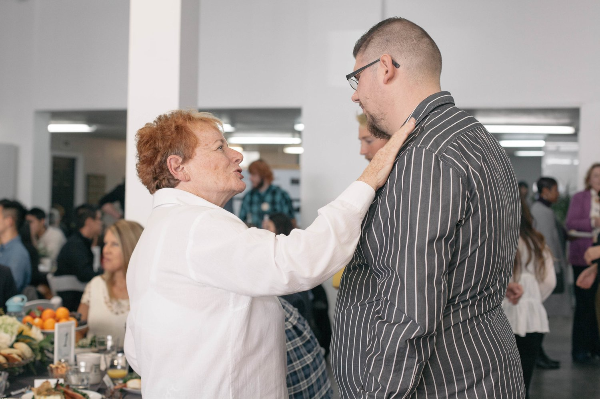
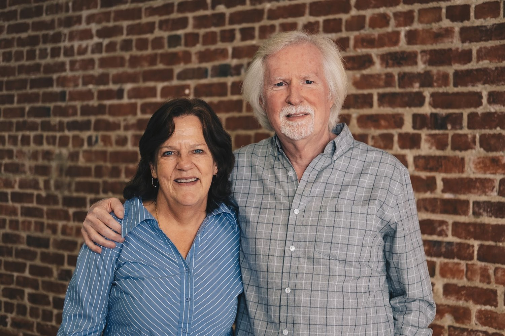
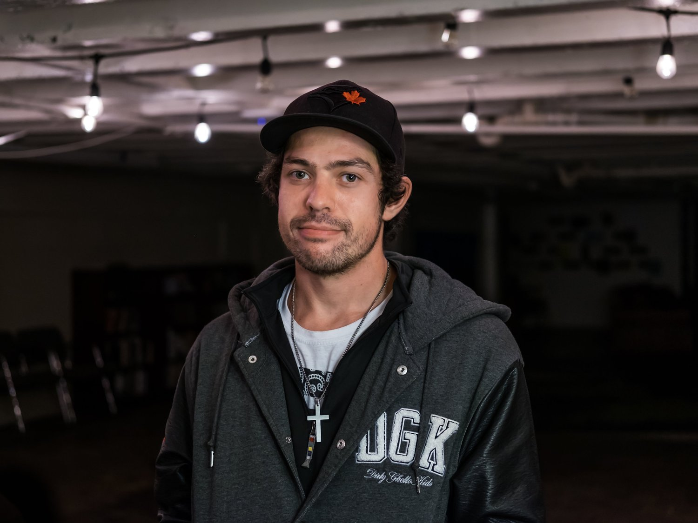

Stories from the street.
News, reflections and stories from life on Ellis Street.

Stories From The Tenderloin: Emily's Story
I was surrounded by a community that constantly saw in me what I couldn’t, believed in me when I didn’t believe in myself, and helped me have faith when I was fearful. I…

Stories From The Tenderloin: Steve's Story
It’s interesting when we give God room, how much He can take people and move in their lives. We think we need to have sophisticated words or great ability, but all we…

Stories From The Tenderloin: Laina's Story
Love looks like asking questions before making assumptions. Love looks like nourishing a dream that’s bigger than you yourself can accomplish. Love looks like giving…
Oct 3, 2018Stories From The Tenderloin: Danica's Story
I love this outreach because it’s so much like what Jesus did in the Bible. He just spent so much time sitting and eating with with people. I think it’s so awesome that…
Sep 18, 2018Stories From The Tenderloin: Liza's Story
YWAM to me? To me it means everything. When I became older I haven’t wanted company or anything special. I have preferred to be alone. But since I’ve come here and I’ve…
Sep 4, 2018Stories From The Tenderloin: Chris's Story
As this friend and I left in different directions, I felt like I was supposed to go into Ross and also felt that there may be a specific woman I was supposed to meet.

Cultivate Vision
Right then the holy spirit spoke to me, and He said, "Why do you think I have YWAM in this neighborhood?" These properties are a laboratory for mission.

Cultivate Hope
In 1995, Ruthie Kim move from a small English village to San Francisco. Since then, God has helped her lived a story that has been nothing short of remarkable.

Cultivate Stewardship
Having spent years as a medical missionary providing primary healthcare to individuals in the developing world, it was pretty clear to Lori that she did not have a…

Cultivate Prayer
In celebrating all that we've grown to be, we wanted to acknowledge our first founders Dick and Pat Eachus. Listen in as Pat shares on the importance of prayer in…

Cultivate Obedience
Though faithful to where they were, Tim and Karol remained hopeful to see their dream of serving in India come to life.
Nov 16, 2017Creative Inheritance
We all have this spark, this potential for creative fire, but until we know God we can't truly see it come to life.
Oct 26, 2017Because Justice Matters
If God can minister to their hearts, telling them that they are beautiful and valuable, then they are going to be able to recognize lies and live in Truth instead.
Oct 13, 2017Faith In The Wandering
Amidst living a story full of insecurities, with endless worries about my future and where to go, Ruth inspires me to keep still, to remain, and to just be.
Aug 30, 2017Seek First The Kingdom
"At a recent staff meeting I felt pressed to share on our calling to pursue God wholeheartedly relentlessly..."

#PrayFor______
"True prayer is neither a mere mental exercise nor a vocal performance. It is far deeper than that - it is spiritual transaction with the Creator of Heaven and Earth."…

Through These Doors: Miracle
Christmas is a time when we reflect on the greatest miracle that God became a man. Miracles still happen as God breaks into our world.

Through These Doors: Aaron Bachiu
Aaron can remember hearing, "All God wants is a relationship with you," and it clicked.